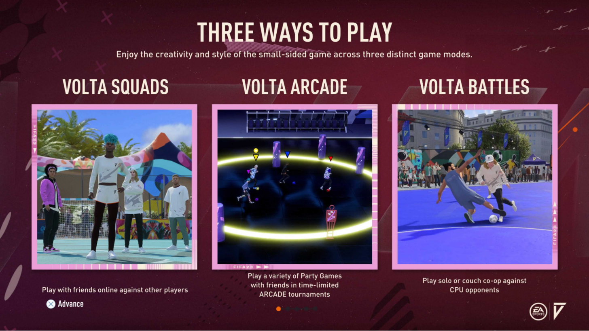
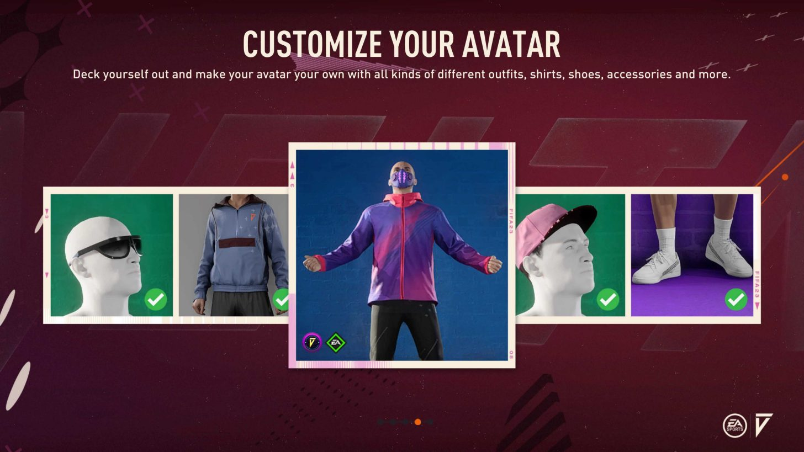
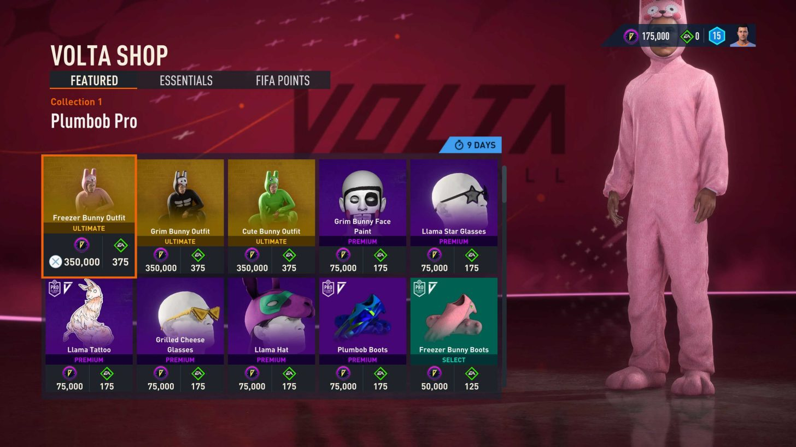
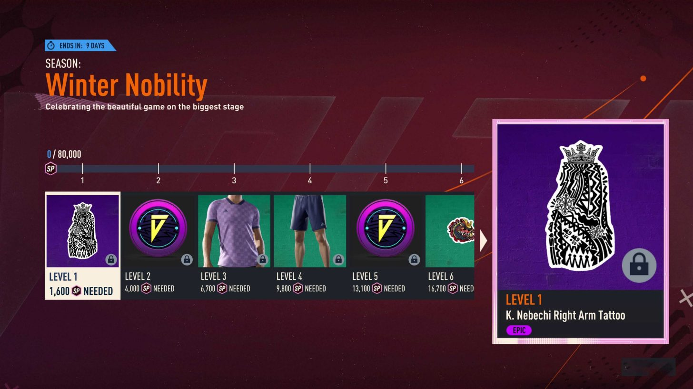

MODOS DE JUEGO: EQUIPOS DE VOLTA Únete a otras personas en un partido online contra otro equipo. BATALLAS VOLTA Puedes jugar en solitario o en modo cooperativo contra rivales de la IA para ganar puntos de batalla y premios. VOLTA ARCADE Únete a a otras personas para participar en una serie competitiva de partidas multijugador exclusivas. ¿Nunca has probado VOLTA ARCADE? Lo vas a disfrutar... De forma natural, pasarás horas jugando con otras personas en varios minijuegos divertidos en los que podrás presumir de tus habilidades en VOLTA FOOTBALL. Después de jugar a EQUIPOS DE VOLTA, nos gusta acabar la noche con unas cuantas rondas de VOLTA ARCADE.
CREA UN AVATAR En función de lo que hayas desbloqueado, algunos atuendos pueden ayudarte a crear tu estilo en VOLTA FOOTBALL. Empiezas con una selección básica, pero a medida que juegues más a VOLTA FOOTBALL, desbloquearás una mayor variedad de atuendos.
EN EQUIPO Siempre juego a VOLTA FOOTBALL en línea con amistades. Así que intentamos equilibrar nuestra plantilla entre los jugadores disponibles. VOLTA FOOTBALL ofrece opciones para formar estrategias, ya sea empleando una mezcla que incluya más jugadores defensivos o sobrecargando plantillas ofensivas. También hay unas cuantas opciones de juego y alineaciones de formación diferentes según cada una de ellas:
- 3 contra 3 Extremo
- 4 contra 4
- 4 contra 4 Extremo
- 5 contra 5
MEJORAR TU AVATAR (FUTBOLISTA) Puedes mejorar los atributos a través de los puntos de habilidad que consigues jugando a EQUIPOS DE VOLTA o a BATALLAS VOLTA. Además, podrás elegir y jugar con las diferentes habilidades únicas para encontrar la que mejor se adapte a tu estilo de juego. Elige una habilidad única
- Tiro explosivo ** Mejora de tiro **
- Turbo ** Mejora de velocidad **
- Sicario ** Mejora física / defensa **
- Despegue ** Mejora de tiros aéreos / con estilo **
- Es un poco difícil de explicar, pero se recibe una ventaja en el aire para finalizar en esas circunstancias
USAR MONEDAS VOLTA Visita la TIENDA VOLTA y mejora la personalización con tus MONEDAS VOLTA. Puedes vestir a tu futbolista con mucho estilo antes de entrar en un partido o jugar a VOLTA ARCADE. Cada semana, nuestra plantilla cambia de atuendo para conjuntar diferentes colores para que no nos perdamos en el campo virtual. Es como un uniforme no oficial.
CÓMO FUNCIONA UNA TEMPORADA DE VOLTA FOOTBALL Jugar partidos Gana EXP de temporada jugando a EQUIPOS DE VOLTA y BATALLAS VOLTA o jugando a VOLTA ARCADE, **muy recomendado ** Completa objetivos semanales Completa objetivos para conseguir EXP de temporada Consigue recompensas de temporada Sube de nivel y consigue recompensas de temporada como atuendos y accesorios
